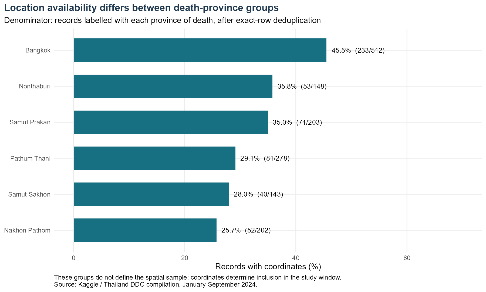
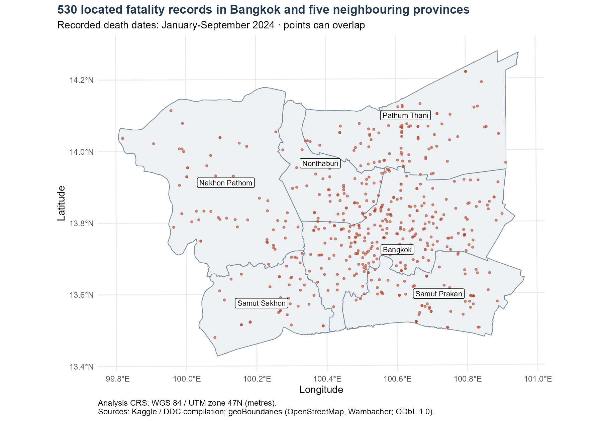
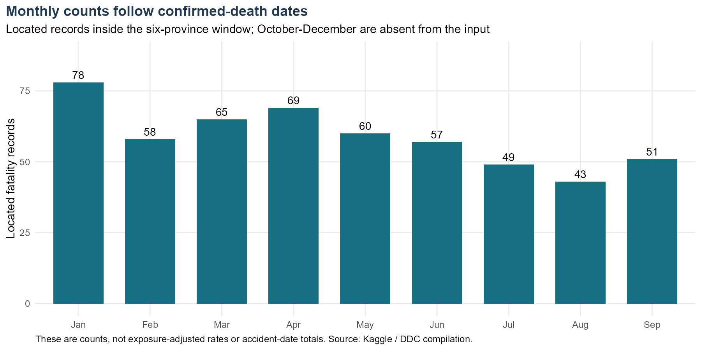
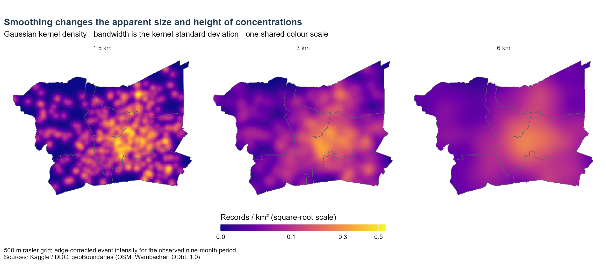
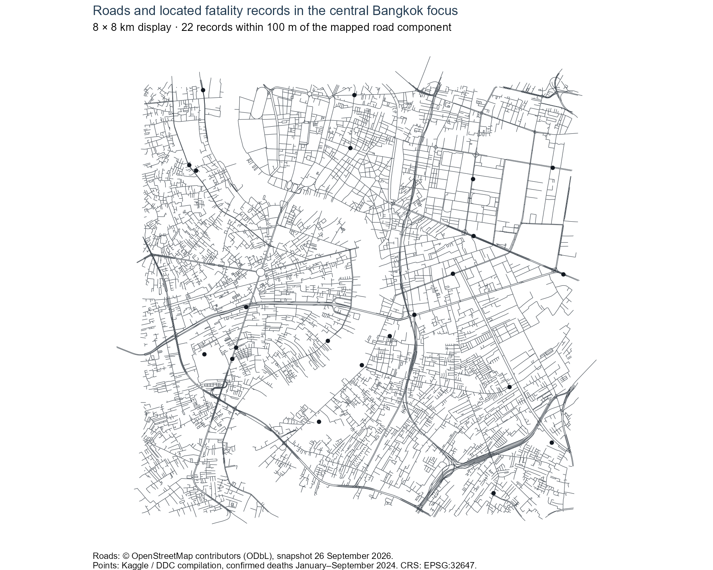
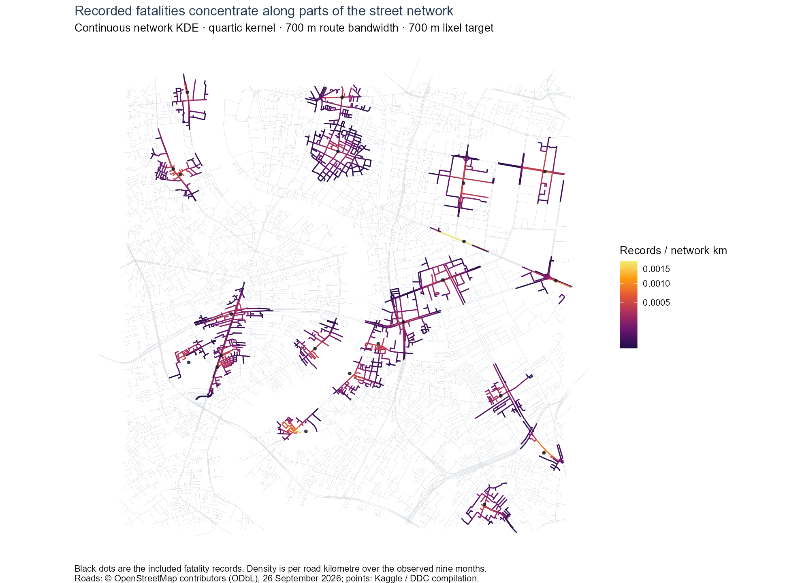
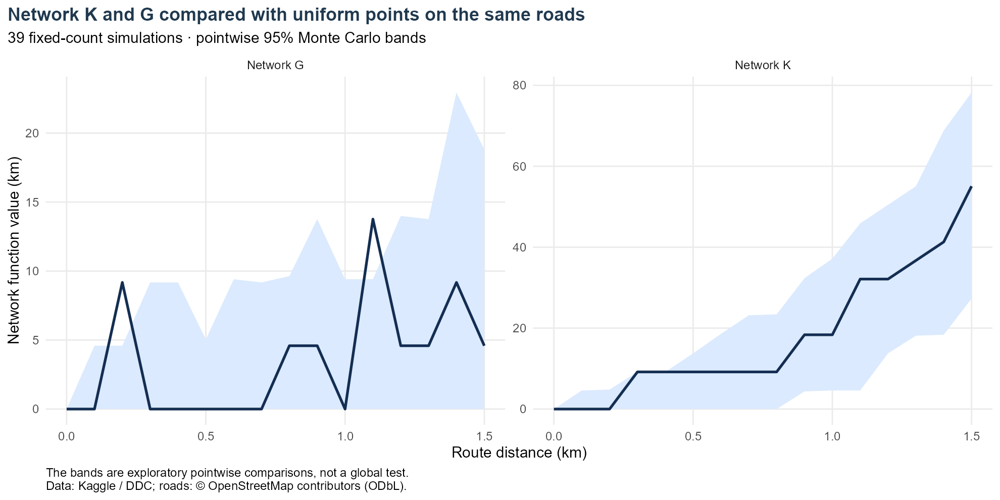
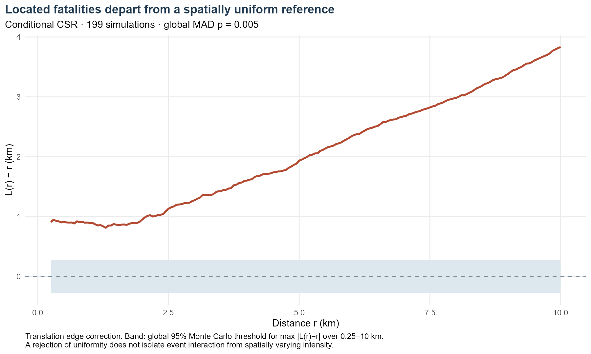
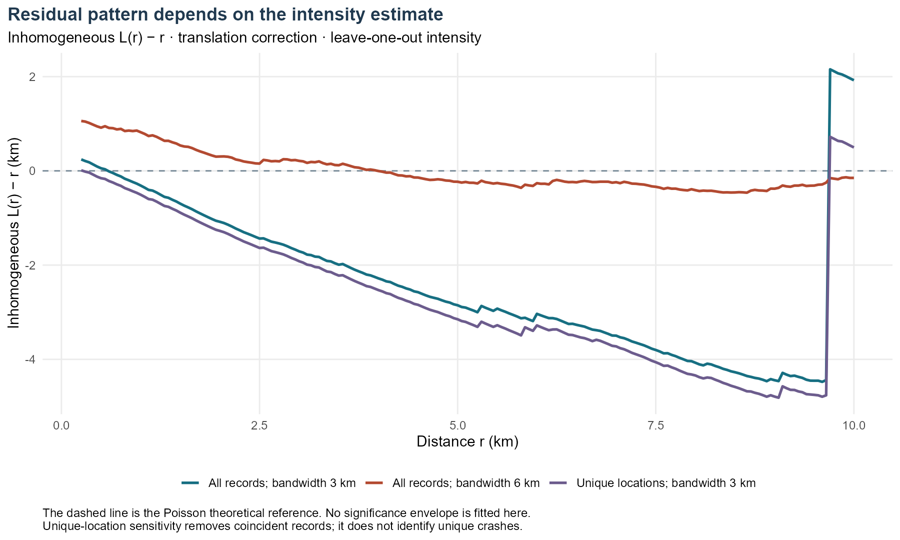

Road-safety planning needs to know where recorded deaths are concentrated, but a concentration on a map is not automatically evidence of greater individual risk. More journeys, more roads, and better reporting can all produce more observed events in an area.
This study asks: Where are geocoded fatality records concentrated in Greater Bangkok during January–September 2024, and what changes when a central Bangkok subset is analysed along roads rather than across open space?
The regional analysis uses all 530 located records and provides context. A focused 8 × 8 km road-network case study around the regional density peak follows the workflow in Chapter 7 of R for Geospatial Data Science and Analytics: road lines, lixels, their centre points, network KDE, and network K/G functions. The small focus area is a detailed example, not a replacement for the regional sample. Neither map estimates individual road risk.
2 Data and study design
2.1 Sources and observation period
The Kaggle dataset, uploaded by Pornsak Kamchan, is described as a Thailand Department of Disease Control compilation combining three sources. Version 1 was accessed on 10 September 2026; its metadata gives a last update of 5 January 2025. That provenance is the uploader’s description, not an independently verified linkage to the underlying source systems.
The original file contains 12,762 rows and 13 fields. Although the title says 2024, every observed date lies between 1 January and 30 September 2024. October–December are absent and are not treated as months with zero deaths. The date field is confirmed death date, so the monthly comparison is not a comparison of accident dates.
Administrative polygons come from geoBoundaries gbOpen Thailand ADM1, boundary ID THA-ADM1-36821470. The pinned release uses source revision 9469f09, represents 2017, and was built in December 2023. Its sources are OpenStreetMap and Wambacher, under ODbL 1.0. Using an older boundary is a limitation; this study does not establish that every boundary matches 2024 exactly.
The focused road network comes from OpenStreetMap contributors via an Overpass API extract dated 26 September 2026, 13:27 UTC. The exact JSON snapshot and a derived projected road file are in the repository under ODbL 1.0 with attribution. The query selects mapped motorways, trunk, primary, secondary, tertiary, unclassified, residential and living-street ways and their links in a roughly 10 × 10 km box. It omits paths and service roads. The roads are a 2026 map of possible routes, not a verified reconstruction of the 2024 network or actual crash routes.
2.2 Event definition
One point represents one distinct record of a road-traffic fatality with usable coordinates inside the study area. It does not necessarily represent one distinct crash. There is no dedicated crash or person identifier.
Exactly identical rows are removed as likely duplicate records. This is a working assumption because different people could, in principle, share every released attribute. The 24 removed rows are outside the final metropolitan sample, so this choice does not change its 530 records. Repeated coordinates in that sample are retained: several fatalities can arise from one crash, and unrelated records may share a rounded location.
The sample contains 503 distinct coordinate pairs and 515 distinct location–date combinations. Collapsing coordinates is used only as a sensitivity check, not as a method for identifying unique crashes. No artificial jitter is added.
2.3 Spatial window and CRS
The window combines Bangkok, Samut Prakan, Nonthaburi, Pathum Thani, Nakhon Pathom, and Samut Sakhon. This follows the six-province “Bangkok and Vicinities” grouping in National Statistical Office documentation. It provides an explicit administrative interpretation of Greater Bangkok.
The six polygons are selected using ISO codes TH-10, TH-11, TH-12, TH-13, TH-73, and TH-74 and dissolved into one study window. Its calculated area is 7,604.1 km². Spatial inclusion uses the coordinates, rather than the person’s province or province of death. Boundary intersections count as inside; no points in this file have ambiguous membership across the selected province polygons.
The coordinate headers are reversed in the downloaded file: all available values in acc_lat fall between approximately 97.9 and 105.6, while acc_long ranges from 5.9 to 20.4. These values and their Thailand locations support treating the former as longitude and the latter as latitude. WGS 84 is assumed for the original coordinates because the source does not document a datum. Coordinates and polygons are transformed to WGS 84 / UTM zone 47N, EPSG:32647, for metre-based distances and areas. Assigning a CRS and transforming coordinates are different operations; see the sf documentation.
2.4 Main analytical choices
Choice
Setting and reason
Main limitation
Observation period
1 January–30 September 2024; complete available date span
Death dates, not crash times; completeness is unknown
Regional observation space
Union of six administrative provinces
Planar methods can cross rivers and non-road space
Network detail
8 × 8 km square centred on the regional 3 km KDE maximum; roads extracted with roughly 1 km buffer
Focus chosen from the data; exploratory local illustration
Road matching
Largest connected OSM road component; retain records within 100 m of it
Mapped roads and record coordinates have errors; snapping is not route verification
Network KDE
250–700 m lixels; quartic kernel; 700 m route bandwidth; continuous method; recursion depth 8
Detail depends on OSM topology, bandwidth and depth
Network K/G
39 fixed-count simulations on roads clipped to the focus square; 0–1.5 km in 100 m steps
Pointwise bands are exploratory and the focus was selected from these data
Kernel density
Gaussian, 3 km standard deviation; 500 m pixels
A regional display scale, not an optimal or causal scale
Density sensitivity
1.5 km and 6 km, with the same legend
Apparent peaks depend on smoothing
Second-order function
Translation-corrected L(r) − r
Ordinary L assumes a stationary process
Test distances
0.25–10 km in 50 m steps
Grid-based evidence; very short distances and longer scales excluded
Null model
Independent uniform locations, conditional on 530 points in the same window
Baseline of uniformity, not a realistic road-exposure model
Monte Carlo settings
199 simulations; seed 20260910
Minimum attainable p-value is 0.005
Inhomogeneous diagnostic
Leave-one-out intensity; 3 km and 6 km bandwidths; translation correction; normalization power 2
Estimated intensity can make inverse weights unstable
Coincidence sensitivity
One point per exact coordinate pair, 503 points
Changes the event unit and cannot recover crash IDs
Ten kilometres is below one quarter of the window’s shorter bounding-box dimension, approximately 94 km. This limits, but does not remove, boundary influence. The 250 m lower limit avoids presenting very small distances as precise given the unknown coordinate accuracy.
3 Task 1 — Data preparation and quality
The workflow preserves the raw CSV and creates new longitude, latitude, and parsed date fields. UTF-8 import retains Thai values. The Buddhist Era year 2567 is converted to 2024 by subtracting 543; the day and month are retained. The script checks parsing, year values, coordinate ranges, polygon validity, and sample counts.
There are no parsing problems or invalid selected polygons in this run. Missing coordinates are not imputed. Text-based geocoding would introduce location uncertainty that is difficult to justify from the available metadata.
The sequence reconciles: 24 identical rows, 9,498 records without usable coordinates, and 2,710 located records outside the window are removed from the 12,762 input rows. The result is 530 spatial records. The largest loss occurs before spatial filtering: 74.6% of distinct national records lack coordinates. This prevents the mapped sample from being treated as representative without further evidence.
3.1 Location availability by province of death

Figure 1: Location availability among records labelled with each province of death.
Coordinate availability varies from 25.7% for records labelled Nakhon Pathom to 45.5% for those labelled Bangkok. This difference warns against comparing mapped counts as if observation coverage were equal. The denominator here is each group defined by province of death; it is not the set of fatalities spatially located inside each polygon. Province of death and accident location can differ, so these percentages cannot be used directly to inflate the spatial counts.
3.2 Spatial sample

Figure 2: Study window and located fatality records.
Bangkok contains 232 of the 530 spatially selected records, or 43.8%. Records also extend into all five neighbouring provinces. This is a regional pattern rather than a set confined to the Bangkok administrative boundary. Points overlap where records share coordinates, and labels can obscure individual points. The figure shows the available geocoded sample; it neither locates missing records nor establishes the risk faced by road users.
Province
Area (km²)
Located records
Records / km²
Bangkok
1570.7
232
0.148
Nakhon Pathom
2088.5
53
0.025
Nonthaburi
639.0
54
0.085
Pathum Thani
1513.6
81
0.054
Samut Sakhon
839.4
40
0.048
Samut Prakan
952.9
70
0.073
Records per km² describe areal intensity over this nine-month extract. They are not deaths per person, per vehicle, or per kilometre travelled. The road-network detail below uses records per network kilometre, a different quantity.
Show R code
thai_names <-c("\u0e01\u0e23\u0e38\u0e07\u0e40\u0e17\u0e1e\u0e21\u0e2b\u0e32\u0e19\u0e04\u0e23","\u0e2a\u0e21\u0e38\u0e17\u0e23\u0e1b\u0e23\u0e32\u0e01\u0e32\u0e23","\u0e19\u0e19\u0e17\u0e1a\u0e38\u0e23\u0e35","\u0e1b\u0e17\u0e38\u0e21\u0e18\u0e32\u0e19\u0e35","\u0e19\u0e04\u0e23\u0e1b\u0e10\u0e21","\u0e2a\u0e21\u0e38\u0e17\u0e23\u0e2a\u0e32\u0e04\u0e23")name_lookup <-data.frame(province_of_death = thai_names,province =c("Bangkok", "Samut Prakan", "Nonthaburi", "Pathum Thani", "Nakhon Pathom", "Samut Sakhon"))coverage <- period %>%inner_join(name_lookup, by ="province_of_death") %>%group_by(province) %>%summarise(records =n(), located =sum(has_coordinates), .groups ="drop") %>%mutate(coverage_pct =100* located / records)counts <-as.data.frame(table(pts$province), stringsAsFactors =FALSE)names(counts) <-c("province", "mapped_records")province_table <- study %>%mutate(area_km2 =as.numeric(st_area(geometry)) /1e6) %>%st_drop_geometry() %>%select(province, area_km2) %>%left_join(counts, by ="province") %>%mutate(records_per_km2 = mapped_records / area_km2)monthly <-st_drop_geometry(pts) %>%count(month =format(death_date, "%m")) %>%mutate(month =factor(month, levels =sprintf("%02d", 1:9), labels = month.abb[1:9]))coverage_plot <-ggplot(coverage, aes(reorder(province, coverage_pct), coverage_pct)) +geom_col(fill ="#176f82", width =0.65) +geom_text(aes(label =sprintf("%.1f%% (%d/%d)", coverage_pct, located, records)),hjust =-0.1, size =3.6) +coord_flip(ylim =c(0, 70)) +labs(title ="Location availability differs between death-province groups",subtitle ="Denominator: records labelled with each province of death, after exact-row deduplication",x =NULL, y ="Records with coordinates (%)",caption ="These groups do not define the spatial sample; coordinates determine inclusion in the study window.\nSource: Kaggle / Thailand DDC compilation, January-September 2024.")save_plot(coverage_plot, "coverage.png")label_points <-suppressWarnings(st_point_on_surface(study))label_xy <-st_coordinates(label_points)labels <-data.frame(province = study$province, x = label_xy[,1], y = label_xy[,2])study_plot <-ggplot() +geom_sf(data = study, fill ="#eef1f3", colour ="#788a98", linewidth =0.4) +geom_sf(data = pts, colour ="#b34a31", size =1.0, alpha =0.6) +geom_label(data = labels, aes(x, y, label = province), size =3.1, fill ="white", alpha =0.85) +coord_sf(crs =st_crs(32647), datum =st_crs(4326)) +labs(title ="530 located fatality records in Bangkok and five neighbouring provinces",subtitle ="Recorded death dates: January-September 2024 · points can overlap",x ="Longitude", y ="Latitude",caption ="Analysis CRS: WGS 84 / UTM zone 47N (metres).\nSources: Kaggle / DDC compilation; geoBoundaries (OpenStreetMap, Wambacher; ODbL 1.0).")save_plot(study_plot, "study-area.png", height =7)monthly_plot <-ggplot(monthly, aes(month, n)) +geom_col(fill ="#176f82", width =0.7) +geom_text(aes(label = n), vjust =-0.45, size =4) +expand_limits(y =max(monthly$n) *1.13) +labs(title ="Monthly counts follow confirmed-death dates",subtitle ="Located records inside the six-province window; October-December are absent from the input",x =NULL, y ="Located fatality records",caption ="These are counts, not exposure-adjusted rates or accident-date totals. Source: Kaggle / DDC compilation.")save_plot(monthly_plot, "monthly.png", height =5)
4 Task 2 — First-order analysis
4.1 Monthly distribution

Figure 3: Monthly counts using confirmed-death dates.
January has the highest count in the spatial sample, with 78 records, and August has the lowest, with 43. September rises to 51. These differences describe the available death-date records, not changes in crash risk. The extract covers only nine months, the months differ in length, and coordinate availability may also change over time. A seasonal or holiday explanation would therefore need additional evidence.
4.2 Kernel density estimation
Gaussian kernel density estimation distributes each event over nearby locations. The 3 km bandwidth provides a district-scale view, while 1.5 km and 6 km show how much the map depends on smoothing. This is a transparent descriptive choice rather than a claim that 3 km is statistically optimal.
Edge correction compensates for kernel mass outside the observation window. All maps use 500 m pixels and one square-root colour scale, with legend values expressed in records per km². The units refer to the entire observed period and are not annualised. Tiny negative values from numerical FFT rounding are checked and clipped to zero for display.

Figure 4: Kernel density with 1.5 km, 3 km, and 6 km bandwidths.
All three maps show a broad concentration in and around Bangkok, but the smaller bandwidth separates it into many local peaks. The maximum intensity falls from 0.545 records/km² at 1.5 km to 0.339 at 3 km and 0.257 at 6 km. The 3 km maximum lies within Bangkok. These are smoothed concentrations of recorded fatalities. Their positions and heights do not identify the most dangerous road segments, because traffic exposure, the road network, and missing records are not included.
The whole-window average is 0.070 records/km². This planar result describes the regional pattern, but a straight-line kernel can smooth across rivers, inaccessible land, and neighbouring roads. The spatstat documentation describes the planar framework. The next section places a smaller sample on mapped streets.
Show R code
# Fixed district-scale smoothing, assessed at half and double bandwidth.bandwidths <-c(1500, 3000, 6000)kde_images <-lapply(bandwidths, function(h) density(X, sigma = h, edge =TRUE, eps =500))kde_frames <-lapply(seq_along(bandwidths), function(i) { frame <-as.data.frame(kde_images[[i]])# FFT smoothing can produce tiny negative round-off values in empty pixels.stopifnot(min(frame$value, na.rm =TRUE) >-1e-10) frame$intensity <-pmax(frame$value, 0) *1e6 frame$bandwidth <-paste0(bandwidths[i] /1000, " km") frame})kde_all <-bind_rows(kde_frames)kde_all$bandwidth <-factor(kde_all$bandwidth, levels =c("1.5 km", "3 km", "6 km"))kde_plot <-ggplot(kde_all, aes(x, y, fill = intensity)) +geom_raster() +geom_sf(data = study, fill =NA, colour ="#53616b", linewidth =0.25, inherit.aes =FALSE) +facet_wrap(~bandwidth, nrow =1) +scale_fill_viridis_c(option ="C", trans ="sqrt", breaks =c(0, 0.1, 0.3, 0.5),name ="Records / km² (square-root scale)",guide =guide_colourbar(barwidth = grid::unit(9, "cm"),barheight = grid::unit(0.35, "cm"), title.position ="top")) +coord_sf(crs =st_crs(32647), datum =NA) +theme(axis.text =element_blank(), axis.ticks =element_blank(), panel.grid =element_blank()) +labs(title ="Smoothing changes the apparent size and height of concentrations",subtitle ="Gaussian kernel density · bandwidth is the kernel standard deviation · one shared colour scale",x =NULL, y =NULL,caption ="500 m raster grid; edge-corrected event intensity for the observed nine-month period.\nSources: Kaggle / DDC; geoBoundaries (OSM, Wambacher; ODbL 1.0).")save_plot(kde_plot, "kde-bandwidths.png", width =13, height =6)peak <- kde_frames[[2]][which.max(kde_frames[[2]]$intensity), ]peak_sf <-st_as_sf(peak, coords =c("x", "y"), crs =32647)peak_province <- study$province[st_intersects(peak_sf, study)[[1]]]peak_ll <-st_coordinates(st_transform(peak_sf, 4326))[1, ]
4.3 Road network, matched events and lixels
The local focus is a square 4 km in each direction from the peak of the 3 km regional KDE (100.510°E, 13.722°N). This selection is conditional on the observed pattern. The Overpass road extract extends roughly 1 km beyond the displayed square so a 700 m kernel near the edge can use nearby roads. Original OSM way geometries are split at shared nodes, transformed to EPSG:32647, and restricted to the largest connected component. Crossings with no shared OSM node are not automatically treated as junctions.
Of the 530 regional records, 22 fall inside the focus square. 22 lie within the prespecified 100 m matching tolerance; 0 are excluded. The median nearest-road distance is 2.9 m and the maximum is 95.4 m. This proximity check supports the map overlay, but does not prove a record happened on the chosen street. The network has 15,733 clipped edges and about 1,060 km of mapped line inside the square.

Figure 5: Central Bangkok mapped roads and included fatality records.
The detailed map shows the selected records against the actual mapped road geometry. The linework is far denser than the regional boundary map, which makes individual corridors visible. This is only a focused subset of the 530 located Greater Bangkok records. It was selected around the regional density maximum and therefore cannot establish that this square is typical of the wider metropolitan area. The black points have unknown positional accuracy and may overlap; the 100 m road match is a screening rule, not a verified crash location.
Show R code
# Focused road-network case study, run after analysis.R from the repository root.# The focus centre is the planar 3 km KDE peak; this choice is exploratory.for (pkg inc("spNetwork", "igraph", "leaflet", "htmlwidgets")) {if (!requireNamespace(pkg, quietly =TRUE)) stop("Install required package: ", pkg)}road_file <-file.path(base_dir, "data/network/bangkok-focus-roads.geojson")road_hash <- digest::digest(file = road_file, algo ="sha256")stopifnot(road_hash =="23241c1439a8bd885177636d531269e853fa329ceff23a61aa76faf17784d35f")road_all <-st_read(road_file, quiet =TRUE)stopifnot(st_crs(road_all)$epsg ==32647, all(st_is_valid(road_all)))road_graph <- igraph::graph_from_data_frame(st_drop_geometry(road_all)[, c("start_node", "end_node")], directed =FALSE)road_components <- igraph::components(road_graph)edge_component <- road_components$membership[match(road_all$start_node, names(road_components$membership))]road_main <- road_all[edge_component ==which.max(road_components$csize),c("way_id", "road_class")]focus_centre <-st_transform(st_sfc(st_point(unname(peak_ll)), crs =4326), 32647)focus_xy <-st_coordinates(focus_centre)[1, ]focus_box <-st_as_sfc(st_bbox(c(xmin =unname(focus_xy[1] -4000), ymin =unname(focus_xy[2] -4000),xmax =unname(focus_xy[1] +4000), ymax =unname(focus_xy[2] +4000)), crs =st_crs(road_main)))point_xy <-st_coordinates(pts)focus_events <- pts[abs(point_xy[, 1] - focus_xy[1]) <=4000&abs(point_xy[, 2] - focus_xy[2]) <=4000, ]stopifnot(nrow(focus_events) >=10L)nearest_road <-st_nearest_feature(focus_events, road_main)snap_metres <-as.numeric(st_distance(focus_events, road_main[nearest_road, ],by_element =TRUE))# Explicit threshold avoids silently treating off-road records as exact road events.focus_on_road <- focus_events[snap_metres <=100, ]road_display <- road_main[lengths(st_intersects(road_main, focus_box)) >0, ]road_focus <-suppressWarnings(st_intersection(road_display, focus_box))road_focus <-st_collection_extract(road_focus, "LINESTRING")road_focus <-suppressWarnings(st_cast(road_focus, "LINESTRING"))road_focus <- road_focus[as.numeric(st_length(road_focus)) >0.01, ]stopifnot(nrow(focus_on_road) >0, nrow(road_focus) >0)
Each road line is cut into lixels of up to 700 m, with a 250 m minimum target for the final split. The centre of each lixel is a candidate density sample. The script evaluates centres within 700 m straight-line distance of at least one included record: a network route cannot be shorter than that straight line, so the excluded centres would have zero weight for a compact 700 m kernel. The calculation uses 15,744 lixels and evaluates 5,712 candidate centres. Density is multiplied by 1,000 to express recorded fatalities per network kilometre over January–September, not per year.
The continuous spNetwork::nkde() method divides kernel mass at intersections while avoiding abrupt jumps at junctions. A fixed 700 m quartic kernel, 1 m node tolerance, 5 m aggregation tolerance and recursion depth 8 are recorded in the code. The 700 m scale is a visual choice for this sparse local sample. Following Gelb’s precision study, depth 10 is compared at 100 systematically selected centres from the ordered lixel list; the mean absolute difference is 5.37e-06 records/km in this case. This checks one approximation setting, not the road or location uncertainty.

Figure 6: Continuous network density along central Bangkok roads.
The coloured sections show where the 22 matched records contribute more density along the mapped streets. The highest sampled value is 0.0018 records per network kilometre for the nine-month extract. Unlike the regional raster, colour follows road segments and uses route distance through junctions. The map does not provide a ranking of road danger: there is no traffic-volume denominator, the sample is small and selectively geocoded, and 2026 OSM linework may differ from the roads present in 2024.
The interactive version below follows the chapter’s paired point and density maps. Use the layer control to switch roads, density and records; the static figures above remain available when map tiles cannot load. Map tiles require an internet connection and have provider attribution.
5 Task 3 — Second-order analysis
5.1 Network K and G comparison
The road-based comparison conditions on the 22 matched records and the mapped road length inside the 8 × 8 km square. The null simulation places the same number of independent points approximately uniformly by road length, rather than by land area; candidate locations are generated at 100 m resolution. spNetwork::kfunctions() compares route distances from 0 to 1.5 km in 100 m steps; G uses 100 m distance bands. A seed of 20260926 fixes 39 simulations. The displayed 95% bands are pointwise Monte Carlo summaries and are not a global multiple-distance test. The boundary, road map and data-selected focus also limit inference.

Figure 7: Network K and G against 39 uniform-on-road simulations.
The network curves compare the observed spacing with points independently placed along the same clipped road network. The observed K curve exceeds the displayed upper band at 0 of 16 evaluated distances, and G exceeds it at 2. These are exploratory pointwise comparisons; isolated crossings do not establish a significant overall departure. The local square was chosen around an observed peak, and its 22 records are too few for a stable account of interaction between distinct crashes.
For regional context, the earlier planar question is whether all 530 located records depart from independent, spatially uniform placement inside the six-province window. Ripley’s K summarises neighbouring events within distance r; the transformation L(r) = √(K(r)/π) makes the Poisson reference L(r) − r = 0. Positive values indicate excess nearby pairs relative to that reference, rather than proof of a causal relationship between crashes. This is a different null model from the road-length simulation above.
Translation correction adjusts pair contributions for the overlap between the observation window and a shifted copy of it. This addresses boundary truncation under the method’s assumptions. It does not correct selective reporting or replace a road-network exposure model.
The test keeps the observed point count fixed. Each of 199 simulations places 530 independent uniform points in the same polygon. For each pattern, including the observed one, the test statistic is the maximum absolute deviation |L(r) − r| across the prespecified 0.25–10 km grid. The Monte Carlo p-value is (1 + number of simulated statistics at least as large as observed) / 200.
The plotted band uses the 95th percentile of simulated maximum deviations. It is a simultaneous, constant-width comparison over the selected grid, not a pointwise envelope or a confidence interval for the true L function. General envelope distinctions are discussed in the spatstat envelope documentation.

Figure 8: Translation-corrected L-function and global Monte Carlo comparison.
The observed curve exceeds the uniform-reference envelope. Its maximum absolute deviation is 3.834 km, compared with a simulated threshold of 0.275 km; the global Monte Carlo p-value is 0.005. Uniform independent placement is therefore not a plausible description of this recorded pattern. However, roads, travel activity, settlement, and recording coverage are spatially uneven. Rejection of uniformity does not show that separate crashes interact, or that the mapped concentrations imply greater individual risk.
Show R code
# Conditional CSR: retain n, independently sample uniform locations in the same polygon.r <-seq(0, 10000, by =50)test_range <- r >=250& r <=10000l_curve <-function(pattern) Lest(pattern, r = r, correction ="translate")$trans - robserved_l <-l_curve(X)nsim <-199Lset.seed(20260910)simulated_l <-replicate(nsim, l_curve(runifpoint(npoints(X), win = W)))observed_stat <-max(abs(observed_l[test_range]))simulated_stats <-apply(abs(simulated_l[test_range, , drop =FALSE]), 2, max)p_global <- (1+sum(simulated_stats >= observed_stat)) / (nsim +1)critical <-unname(quantile(simulated_stats, 0.95, type =1))csr_df <-data.frame(distance_km = r[test_range] /1000,observed = observed_l[test_range] /1000,lower =-critical /1000, upper = critical /1000)csr_plot <-ggplot(csr_df, aes(distance_km, observed)) +geom_ribbon(aes(ymin = lower, ymax = upper), fill ="#dce8ed") +geom_hline(yintercept =0, linetype =2, colour ="#788a98") +geom_line(colour ="#b34a31", linewidth =1.1) +labs(title ="Located fatalities depart from a spatially uniform reference",subtitle =sprintf("Conditional CSR · 199 simulations · global MAD p = %.3f", p_global),x ="Distance r (km)", y ="L(r) − r (km)",caption ="Translation edge correction. Band: global 95% Monte Carlo threshold for max |L(r)−r| over 0.25–10 km.\nA rejection of uniformity does not isolate event interaction from spatially varying intensity.")save_plot(csr_plot, "csr-envelope.png")
5.4 Allowing intensity to vary
An inhomogeneous K function reweights pairs using estimated local intensities. Here, intensity is estimated leave-one-out so a point does not contribute to its own estimate. The Kinhom documentation explains this approach and the Poisson reference. Translation correction and renormalisation with power 2 are used.
These curves are descriptive diagnostics, not a calibrated second hypothesis test. A suitable formal test would also account for estimating the intensity surface. The diagnostic still assumes that its intensity model and second-order structure are meaningful for the observation process.

Figure 9: Inhomogeneous L-function under bandwidth and coincidence sensitivity checks.
The result changes materially with bandwidth. At 1 km, L-inhomogeneous(r) − r is −0.312 km using 3 km smoothing but +0.820 km using 6 km. The 3 km curve also jumps sharply near the upper end of the distance range. Collapsing repeated locations changes the curve but does not resolve bandwidth sensitivity. Without a calibrated envelope, negative values are not evidence of significant regularity. These diagnostics do not support a stable conclusion about residual interaction.
An intensity-weight check helps explain the instability. At 3 km bandwidth, one point contributes 30.0% of the sum of inverse-intensity weights; at 6 km, the largest share is 2.94%. This is not the share of the K statistic itself, but it shows how a low estimated intensity can give one location substantial influence. The sharp change should not be interpreted as a physical interaction threshold.
Bandwidth (km)
Minimum intensity / km²
Maximum intensity / km²
Largest inverse-weight share (%)
3
0.000207
0.318
29.97
6
0.004577
0.251
2.94
6 Task 4 — Integration and sensitivity
The regional and local maps answer different questions. The planar view locates broad concentrations among all 530 geocoded records. The network view follows mapped roads for a selected square of 22 records; its values per network kilometre must not be compared numerically with the planar map’s values per square kilometre. The road K/G simulations replace a land-uniform reference with a uniform-by-road-length reference in that square. Their pointwise bands and small, data-selected sample do not support a general claim of crash interaction.
The ordinary regional L-function still shows that a uniform land-area reference is inadequate. This is not independent proof of interaction: spatially varying road density, activity and reporting can produce the result.
The inhomogeneous diagnostic changes the interpretation. Results depend on the intensity bandwidth and, at 3 km, on influential low-intensity locations. It would be misleading to select one curve and label the pattern “clustered” or “regular” without acknowledging this instability.
Repeated coordinates are another concern. Removing coincident locations reduces the pattern from 530 records to 503 locations. At 10 km, ordinary L(r) − r changes only from 3.834 to 3.806 km; at 1 km it falls from 0.893 to 0.726 km. Coincident records matter more at short distances, but they do not explain the broad ordinary-L departure. This sensitivity changes the event unit and is not a reconstruction of distinct accidents. No separate p-value is claimed for that comparison.
Distance (km)
All records: L(r) − r (km)
Unique locations: L(r) − r (km)
1
0.893
0.726
3
1.274
1.250
5
1.936
1.931
10
3.834
3.806
Show R code
# Descriptive inhomogeneous L curves, not a calibrated hypothesis test.# Intensity is re-estimated leave-one-out at each point and bandwidth.inhom_curve <-function(pattern, h) { kval <-Kinhom(pattern, sigma = h, r = r, correction ="translate",leaveoneout =TRUE, renormalise =TRUE, normpower =2)sqrt(pmax(kval$trans, 0) / pi) - r}inhom <-bind_rows(lapply(c(3000, 6000), function(h) {data.frame(distance_km = r[test_range] /1000,value =inhom_curve(X, h)[test_range] /1000,curve =paste0("All records; bandwidth ", h/1000, " km"))}), data.frame(distance_km = r[test_range] /1000,value =inhom_curve(X_unique, 3000)[test_range] /1000,curve ="Unique locations; bandwidth 3 km"))inhom_plot <-ggplot(inhom, aes(distance_km, value, colour = curve)) +geom_hline(yintercept =0, linetype =2, colour ="#788a98") +geom_line(linewidth =1) +scale_colour_manual(values =c("#176f82", "#b34a31", "#6c5c8d"), name =NULL) +labs(title ="Residual pattern depends on the intensity estimate",subtitle ="Inhomogeneous L(r) − r · translation correction · leave-one-out intensity",x ="Distance r (km)", y ="Inhomogeneous L(r) − r (km)",caption ="The dashed line is the Poisson theoretical reference. No significance envelope is fitted here.\nUnique-location sensitivity removes coincident records; it does not identify unique crashes.")save_plot(inhom_plot, "inhomogeneous-sensitivity.png")unique_l <-l_curve(X_unique)intensity_diagnostics <-bind_rows(lapply(c(3000, 6000), function(h) { lambda <-density(X, sigma = h, edge =TRUE, at ="points", leaveoneout =TRUE)stopifnot(all(is.finite(lambda)), all(lambda >0))data.frame(bandwidth_km = h/1000, min_intensity_km2 =min(lambda)*1e6,max_intensity_km2 =max(lambda)*1e6,largest_inverse_intensity_share_pct =100*max(1/lambda) /sum(1/lambda))}))at_distances <-c(1000, 3000, 5000, 10000)l_summary <-data.frame(distance_km = at_distances /1000,all_records_L_minus_r_km = observed_l[match(at_distances, r)] /1000,unique_locations_L_minus_r_km = unique_l[match(at_distances, r)] /1000)inhom_summary <- inhom %>%filter(distance_km %in% (at_distances/1000))
Together, the checks favour a restrained conclusion: located fatality records are unevenly distributed, and a focused road map makes their street context visible; neither analysis establishes robust interaction or a road-risk ranking. The network model handles route distance in one selected part of Bangkok, but cannot repair the missing-location and event-definition problems.
7 Task 5 — Geovisualisation and communication
Each major figure has a short interpretation immediately beneath it. The study map provides geographic context before the density maps; the regional KDE panels share one legend. The road figures show both the original mapped lines and density on lixels. The interactive map offers switchable layers over an attributed light basemap, with static figures as a fallback. Count charts retain zero baselines. Statistical plots label route or straight-line distances and describe the distinct null models. The inhomogeneous planar diagnostic deliberately has no significance shading.
Maps use a colour gradient for magnitude rather than labelling arbitrary bands as “safe” or “dangerous”. The displayed figures and their interpretations support the same event definition and observation period.
8 Task 6 — Public-safety planning and management
The main practical use of this analysis is to identify areas for closer investigation. Bangkok contains 232 of the 530 located records, and its regional concentration remains visible under different KDE bandwidths. The focused road map then indicates corridors where matched records appear closer together along mapped streets. Agencies could use these views to review existing fatal-crash case files and verify exact sites. The network map alone is insufficient for choosing roads for engineering work.
Improving location recording should be a priority alongside hotspot review. Nearly three quarters of distinct records in the national extract have no coordinates, and availability differs across province-of-death groups. A consistent process for recording crash coordinates, location accuracy, and event identifiers would make future spatial comparisons more credible. Linking multiple fatalities to a shared crash identifier would also help distinguish the number of deaths from the number of crashes.
Decisions about enforcement, road redesign, or emergency response need information that is missing here. Traffic volumes, road type, speed, intersection layout, pedestrian activity, and emergency access could help assess whether a concentration reflects greater exposure, preventable hazards, or reporting differences. The 2026 road map should also be checked against 2024 road conditions before operational use. These are proposed follow-up inputs, not causes established by this study.
The results should not be used to reduce resources in areas with few mapped records. A sparse map may reflect incomplete geocoding. Similarly, the January count is not sufficient evidence for a seasonal deployment strategy because the available dates concern confirmed deaths, the extract stops in September, and monthly observation completeness is unknown.
A reasonable next step is a joint data-quality and site-review exercise: verify the locations and event identities in the broad concentration areas, compare them with independent operational records, and then assess particular interventions using exposure and road-condition evidence.
Limitations and conclusion
The dominant limitation is selective location availability. The analysis concerns 530 geocoded records, not all road fatalities in Greater Bangkok. The source’s national completeness and integration procedures have not been independently verified. The date field records confirmed deaths and covers nine months; it cannot support full-year or precise accident-time conclusions.
The assumed WGS 84 datum, unknown coordinate accuracy and older administrative boundaries add uncertainty. The network detail adds a 2026 OSM road snapshot, a largest-component and 100 m matching rule, a fixed 700 m bandwidth, and a focus chosen from the observed planar peak. It covers only 22 records. Multiple records can refer to one crash, while exact-row deduplication relies on released attributes. Neither edge correction nor road snapping solves these problems.
The evidence answers the research question in two parts. Located records show a prominent broad concentration within Bangkok. The local road map shows how some of those records relate to streets and how a route-distance KDE differs from a raster surface. Sensitivity of the planar intensity-adjusted curves and the limitations of the local network comparison leave residual interaction unresolved. These are exploratory maps for further checking, rather than a road-risk ranking.
Reproducibility
The regional workflow is in analysis.R, followed by the network workflow. Expand the code sections to see the exact preparation, plotting, and simulation code. The report executes both scripts once before displaying results; the folded blocks display the same code without executing it twice. The pinned OSM snapshot and projected linework permit the street analysis to be rerun without refetching a changing map. prepare-network.R documents how shared OSM nodes were used to split road lines.
Original input hashes are checked before analysis. Raw files remain outside Git because the Kaggle licence label does not establish clear redistribution permission. The repository includes download instructions, metadata, checksums, aggregated outputs, and package versions. The boundary source is pinned to a specific revision. No individual record is included in the downloadable result tables.
From the repository root, obtain the inputs described in data/README.md, then run:
The source road file is already committed, so prepare-network.R is optional when reproducing the published result; running it regenerates the projected GeoJSON from the pinned OSM snapshot. Rendering the report reruns the regional and network analyses with fixed simulation seeds. The slides use the same saved figures and summaries. On Windows, render.ps1 sets a supported UTF-8 locale for the render process and restores the previous environment afterwards.